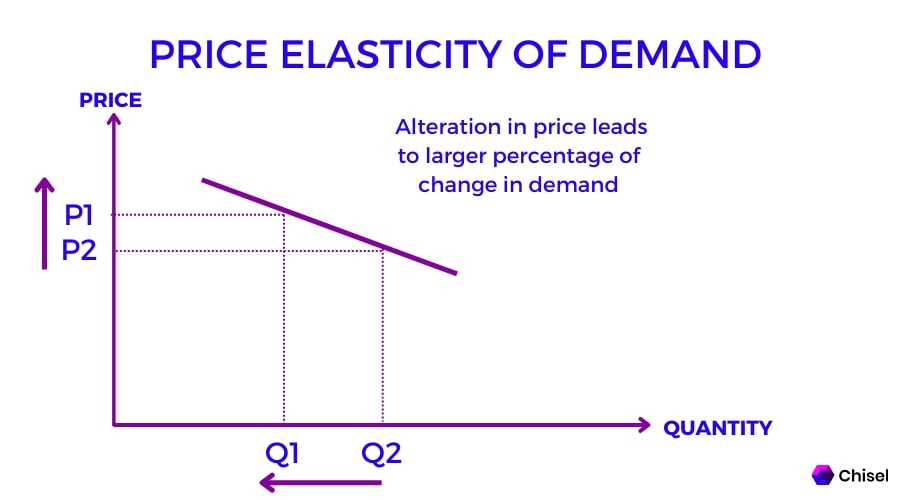
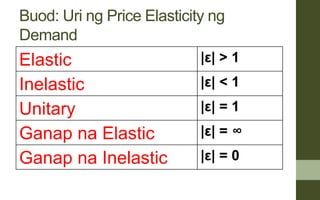

ELASTISIDAD NG DEMAND AT SUPPLY
ELASTISIDAD - Pamamaraan upang masukat ang pagtugon ng mga mamimili at nag-titinda

Elasticidad ng Demand (ED) - mamimili
Elasticidad ng Supply (ES) - nagtitinda
Uri ng Elasticidad

- Elastik - Coefficient: /E/>1
- demand o supply ay masasabing price elastic kapag mas malaki ang naging bahagdan ng pagtugon ng quantity demanded/supplied kaysa sa bahagdan ng pagbabago ng presyo.
Halimbawa: Softdrinks
%Q > %P
2.Di-Elastik - Coefficient: /E/<1
-halos walang pamalit
Halimbawa: Gamot
%Q < %P
- Unitary - Coefficient: /E/=1
-Pareho ang Bahagdan
Halimbawa: Wala
%Q = %P
- Ganap na Elastik - Coefficient: /E/
-Infinite
Halimbawa: Chocolates
- Ganap na Di-Elastik - Coefficient: /E/ 0
-Walang kakayahan ang mamimili na bawasan ang demand kahit patuloy ang pagtaas ng presyo.
Halimbawa: Bigas